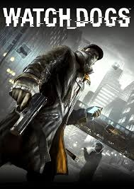

Select A Watch Dogs!
Select A Game Down Below!
Summary
"Watch Dogs," released in 2014, is an action-adventure game set in a near-future rendition of Chicago. Players assume the role of Aiden Pearce, a skilled hacker seeking vengeance for a family tragedy. Using hacking abilities, players manipulate the city's infrastructure to complete missions and uncover the truth behind a violent incident involving Aiden's niece. With a blend of stealth, hacking, and combat mechanics, "Watch Dogs" offers players multiple ways to approach challenges in its immersive open-world environment. The game received positive reviews for its engaging storyline and innovative hacking mechanics.
More Detail
"Watch Dogs" introduces players to Aiden Pearce, a vigilante hacker with a tragic past, in a near-future rendition of Chicago. The game's narrative kicks off with a botched hacking attempt that results in a violent incident, leading to the death of Aiden's niece. Fueled by grief and seeking vengeance, Aiden delves into Chicago's sprawling open world to uncover the truth behind the tragedy and to dismantle the criminal organizations responsible. Central to the gameplay experience is Aiden's hacking prowess. Armed with a smartphone, he can manipulate the city's interconnected network infrastructure to his advantage. This includes accessing security cameras to survey locations, hacking traffic lights to cause accidents or create distractions, and remotely triggering traps to incapacitate enemies. The hacking mechanic offers players a wide range of options for approaching missions and challenges, allowing for creative problem-solving and strategic gameplay. Chicago itself serves as a vibrant and dynamic playground for players to explore. The city is teeming with life, from bustling streets and towering skyscrapers to quiet neighborhoods and industrial districts. The game's attention to detail is evident in its meticulously crafted environment, with landmarks, NPCs, and ambient events adding to the immersion of the experience. In addition to the main storyline, "Watch Dogs" features a variety of side activities and missions scattered throughout the city. These include criminal convoys to intercept, digital trips to experience surreal mini-games, and fixer contracts to complete for rewards. These diversions not only provide additional content for players to enjoy but also contribute to the overall atmosphere and depth of the game world. The game's combat mechanics offer a mix of stealth, hacking, and traditional gunplay. Players can choose to approach encounters quietly, using hacking abilities to disable security systems and incapacitate enemies without alerting others. Alternatively, they can engage in intense firefights, utilizing a variety of firearms and gadgets to overcome adversaries. "Watch Dogs" also features an online multiplayer component, where players can engage in competitive and cooperative modes. One notable mode is the innovative "Invasion," where players can seamlessly enter each other's single-player games as hackers, challenging the host player to identify and eliminate them before they steal data or cause havoc. With its engaging storyline, innovative hacking mechanics, and immersive open-world environment, "Watch Dogs" garnered praise for its ambitious scope and execution. While some criticized aspects of its narrative and gameplay, the game's strengths ultimately outweighed its shortcomings, cementing its status as a memorable entry in the action-adventure genre.